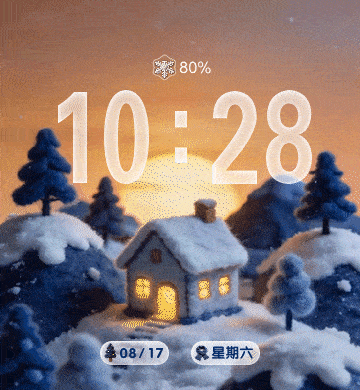
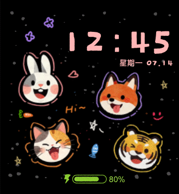
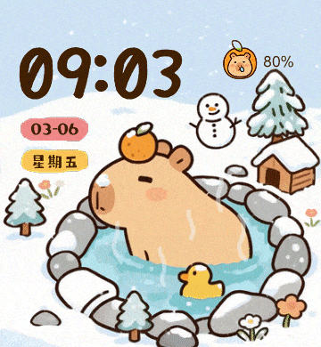
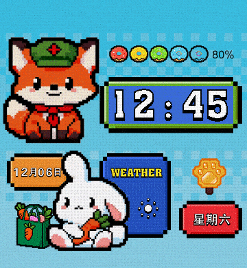
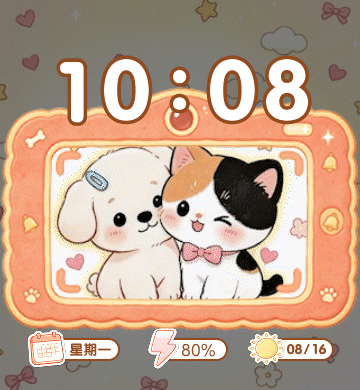
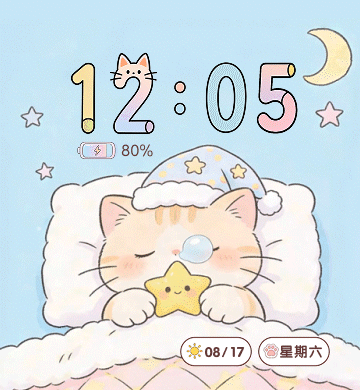

动态设计
智能手表动态表盘 6 款 · 动画作品 3 支。表盘以 GIF 动效呈现，动画可直接在页面内播放。
一、智能手表动态表盘 6 款 · 360 × 390
围绕智能手表小尺寸屏幕设计的动态表盘：主视觉之外，时间、日期、星期、天气与电量等信息层与画面风格统一，兼顾可读性与动态表现。
-

-

-

-

-

-

二、动画作品 3 支 · 页面内直接播放
三个方向的动画练习：极简线面、几何抽象与手绘涂鸦。为便于在线播放，页面内为压缩版（原片可下载）。